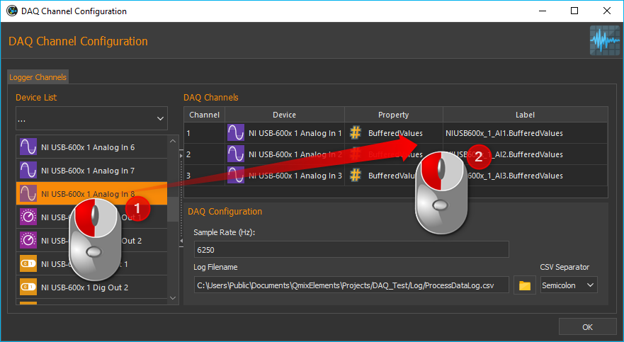
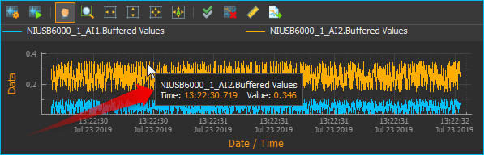
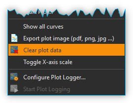
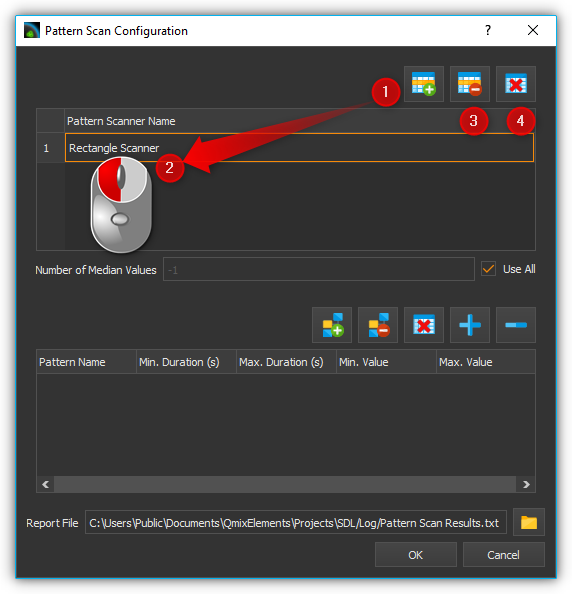
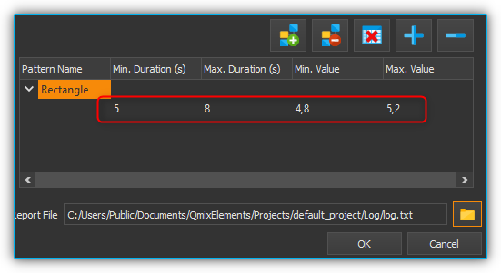

23. DAQ Add-on
23.1. Installation
The DAQ Add-on is not part of the standard installation package and must be installed as add-on. The versions of the DAQ Add-on and the installed CETONI Elements software should match. For example, if you want to install the DAQ Add-on version 20190721, you need to have CETONI Elements version 20190721 installed.
Important
The version number of CETONI Elements and the DAQ Add-on should match.
Please close all other programs before launching the installation.
Important
Install the DAQ plugin and the device driver before connecting your DAQ devices to your PC through USB for the first time.
Launch CETONI_Elements_DAQ_Setup_64bit.exe to begin the
installation. The installation assistant will guide you through the
installation of the software and hardware drivers.
Important
If you want to install the hardware drivers on a windows system, you need to be logged in as an administrator.
23.2. Introduction
The DAQ Plugin serves data logging and evaluation at high sample rates (> 1000 samples per second). Devices with a high data acquisition rate are supported (i.e. . National Instruments USB 600x multi-function I/O devices). But the DAQ Plugin supports usage of devices with low data acquisition rate, too. Data are written into a process graph and into a CSV-log-file simultaneously. There is no separate configuration required. Use the push button DAQ ❶ (see figure below) in the sidebar to display the process data graphs.

DAQ selector button – Click this to show the process data graphs and the workbench for the results analysis of pattern recognition. The former is explained in detail in section Diagram Navigation & Use, the latter in section 1.10.4.Result Analysis for Pattern Recognition
Graph canvas – This displays the curves of all process data sets that are being recorded.
Legend – The legend lists all data sets that are displayed with their respective colors. Here you can toggle between whether or not a curve is being displayed.
Toolbar – Here you find buttons to configure the data logging, to start and stop the recording and to navigate the display.
23.3. Toolbar
|
Opens the configuration dialog of the graphic process data logger. |
|
Toggles the recording of process data. |
|
Panning tool to move the currently displayed section of the graph. |
|
Draws a zoom-in frame to enlarge a desired area of the graph. |
|
Auto-scales the X axis to fit all process data on the screen. |
|
Auto-scales the Y axis to fit all process data on the screen. |
|
Auto-scales both X and Y axes to fit all process data on the screen. |
|
Activates auto-scaling: during a recording, both x- and y-axes are continuously rescaled to fit all process data on the screen. |
|
Show all curves. If curves are hidden, they are displayed again. |
|
Clear plot data. Deletes all data from the diagram. |
|
Toggle X-axis scale. This switches the scaling of the X-axis between absolute date/time stamp and relative time in seconds and milliseconds since the start of recording. |
|
Export plot image. Exports an image of the currently displayed section. |


23.4. Configuration Dialog
23.4.1. Overview

Click on the button Configure data acquisition in the toolbar to open the configuration dialog.

The configuration dialog consists of the following sections:
Device List – shows all devices that return data that may be logged. The filter selection box allows to pre-select a specific device type (e.g., I/O channels).
DAQ Channels – lists all data series or curves that are being recorded and displayed in the diagram.
DAQ Configuration – in this section you can adapt the sample rate and enter the path of the log file that is written simultaneously to the process data graph.
23.4.2. DAQ Channels Table

The table DAQ Channels shows the configured data acquisition channels in tabular form. Each row in the table corresponds exactly to one curve in the graphical plot. The following columns are available:
Channel – returns the channel number.
Device – lists the device name for each respective channel including its icon.
Property – shows the property of the respective device that is to be recorded. The data type is identified via a data-type specific icon.

Numerical value

Boolean value

Text value
Label – allows you to define a user-specific name for each channel. This label will also be used in the legend of the plotted graph.
To add and configure channels, please proceed as detailed in the following sections.
23.5. Configure data acquistion
23.5.1. Step 1 – Adding Channels
To add a channel you Logger Channels table. To do this, move the relevant item from the Device List to the Logger Channels table using Drag-&-Drop. The new channel will be added at the position where you release the mouse button (see figure above).
Tip
To simplify the device selection process, the device list may be filtered for a relevant device type.
23.5.2. Step 2 – Selecting the Device Property
Select the device property that you want to record by double clicking into the Property field of the respective channel from DAQ Channels table. This will display a drop-down list with all available device properties from which you may select the desired item (see figure below).

23.5.3. Step 3 – Changing the Channel Label
In the Label column you can assign a label to each channel. This label will later be displayed in the legend of the graph as the curve label. To change the label, double-click in the Label table cell (see figure below) and then enter the new label.

Important
When a different device property is being selected, a new channel label will be assigned automatically. Therefore, the channel label should be changed after the device property has been selected.
23.5.4. Deleting Channels
In order to delete one or multiple channels from the DAQ Channels list, first you have to mark the respective channels using the computer mouse. Now you may use either the keyboard’s Delete key or select the relevant item from the right-click context menu.


You may also delete the entire list in a single step by using the item of the context menu.
23.5.5. Step 4 – Defining the Sample Rate
In the field Sample Rate (Hz) you can define the frequency measurement values are written into the plot and the log file at. The maximum sample rate depends on the measurement frequency of the hardware in use.

Important
Always select a sample rate that is only as high as necessary. High sample rates produce a lot of data. Drawing large amounts of data requires more computer power and may slow down the usability of the application.
Important
Use a low sample rate to record data over several days or use the graphical logger instead.
The configuration will be saved and reloaded automatically upon exiting the Logger Configuration dialog.
23.5.6. Step 5 – Configuring the Log File
In this section you can enter the log file ❶ the measurement values are written into in addition to the graphical plot. Furthermore you can define the separator character the measurement values of the different channels are separated from each other with ❷.

23.6. Start/Stop Data Logging

The data logging process may be started/stopped via the relevant button in the toolbar.
23.7. Diagram Navigation & Use
23.7.1. Overview
The DAQ plug-in offers a number of possibilities to customize the way data are displayed. This includes resizing parts of a curve and showing or hiding individual curves. The diagram consists of a plot area ❶ plus both an X-axis (time) ❸ and a Y-axis (process data) ❹.

The time axis shows date and time as absolute values. The process-data axis shows the respective measurement data; it is without units as it potentially represents a variety of very different values and measurement units.
A right mouse click within the plot area will open a context menu ❷ with a number of additional functions.
23.7.2. Changing the Displayed Section

The Pan Tool provides you with a simple way to move the displayed section of the plot area. It may be activated via its toolbar button and the displayed section may then be moved around using the mouse whilst keeping the left button pressed.
Important
Panning of the displayed plot section will deactivate the auto-scaling of the diagram axes.
23.7.3. Display Curve Values
When the Pan Tool is active, you can move the mouse pointer over a curve to display the value at that specific position.
23.7.4. Zooming via the Mouse Wheel
Turning the mouse wheel whilst the pointer is within the plot area will allow you to adjust the displayed section of a graph by increasing (zooming in) or decreasing (zooming out) its zoom level.
|
Increase zoom level (zoom in) |
|
Decrease zoom level (zoom out) |


23.7.5. Defining a Display Section

The Zoom Tool allows you to directly select a specific area of the plot and increase its resolution. To do this, please proceed as follows (see figure below):
Using the mouse, left-click-and-hold into the plot area to set the first corner of the zoom frame.
Move the mouse pointer to define the size of the frame as desired.
Releasing the mouse button will finalize the size of the frame. The selected area will be scaled to the current graph size (zoom in).

23.7.6. Auto-Fit & Auto-Scale
The toolbar and the context menu both contain a number of tools to adjust what is displayed in the diagram, in particular to ensure that all or specific data are visible.
The following possibilities exist:
|
Rescales the X axis to display all current time data values for a given process data resolution. |
|
Rescales the Y axis to display all current process data values within a given time period. |
|
Rescales both X and Y axes to display all currently available data. |
|
(Re-)activates auto-scaling: as long as data are being recorded, both X and Y axes will be adjusted dynamically to ensure all data are being displayed. |
You may also activate auto-scaling for X and Y axes individually via the context menu:

Important
Zooming or panning within the displayed plot section will deactivate auto-scaling.
23.7.7. Show/Hide Individual Curves
To improve scaling and visibility, you may show or hide individual curves. To do this, right-click the desired item in the plot legend and select the desired function to either hide the corresponding curve only or all other but the corresponding curve as indicated in the figure below.

To revert to displaying all curves, activate the context menu from within the plot area and select the menu item (see figure below).

23.7.8. Select Curve Color
To choose a different curve color, right click an item in the plot legend. From the context menu select the menu item (see figure below).

In the color selection dialog which is now shown (figure below), you can choose any color.

23.7.9. Exporting Plot Image

You may export a picture of the current diagram using the toolbar or the right-click context menu and selecting . This will open a dialog box (see figure below) to define the location (folder) where the image is to be saved:

Please enter a name for the
image file ❶ and select the desired file type ❷. The export function
supports standard image file formats (png, jpg...) as well as scalable
vector graphic formats (.pdf, svg...).
To close the dialog and to start the image export, click Save❸.
23.7.10. Deletion of Diagram Data

You may clear the plot area and delete all data recorded since the start of the present recording using the context menu item . Recording will resume from this point.
23.7.11. Switching the scaling of the X-axis

You can switch the scaling of the X-axis between two different modes. By default, the X axis displays an absolute date/time stamp.

You can switch the X-axis to display the relative time in seconds and milliseconds. This means that the event t0 marks the point in time at which the recording was started.
To toggle the axis, right-click in the diagram and select from the context menu.

23.8. Script Functions

To automate the capture of data or to synchronize data capture with other processes, the data acquisition can be started and stopped using QmixElements script functions. The corresponding functions can be found in the DAQ category in the list of the available script functions.
23.8.1. Start Data Acquisition
This function is used to start the data acquisition with the currently configured settings and channels. The current content of the plot is not deleted.
23.8.2. Stop Data Acquisition

This function stops data acquisition.
23.9. Importing Log Files
The DAQ add-on offers the functionality to read recorded log-files into the plot. The tool for importing log files is able to recognize related log files of a long-term recording and import all related log files in chronological order. For large amounts of data, individual data points are omitted so that a maximum of one million data points per log curve are displayed in the plot.
Important
The import tool recognizes log files that belong together and reads them in chronological order.
To read in a single log file or a series of log files proceed as follows:
From the toolbar select the tool for importing log files.
Select an arbitrary file from the log file series you want to read in. In the example shown, the tool recognizes from the file numbering that the log files belong together.

The log files are then read in. The progress window displays the progress of the import process. You can continue working with the software during the import.

After completion of the import process, the log curves are displayed in the graphical plot together with the file name.

23.10. Pattern Scan
The DAQ add-on offers the possibility to search plot curves for patterns and mark them in the graphical plot.
23.10.1. Configuring and Running the Pattern Scan
The following simple example explains pattern recognition based on the recognition of square wave signals.
A plot curve is given, which contains square wave signals with a width between 5 and 8 seconds and a peak value of 5V.

To configure the pattern scan, right-click the curve you want to scan ❶ and select ❷.

In the dialog that opens afterwards, you must first create a new pattern scanner. To do this, click the Add New Time Value Pattern Scanner button ❶. Then you can give the pattern scanner a meaningful name ❷. In the example, Rectangle Pattern Scanner is selected. With the button ❸ you can delete the selected pattern scanner and with ❹ you can delete all pattern scanners.
A report file is generated during pattern recognition. This file contains the measured values around the median of the recognized pattern. How many values around the median should be contained in the report file can be configured via the input field Number of Median Values ❶. If you want all measurement values within the detected pattern to be included in the report file, select the check box Use All ❷.

The next step is to configure the patterns to be recognized by the pattern scanner. To do this, you must select the pattern scanner ❶ whose pattern you want to configure. You can then create a new pattern using the Create Item button ❷. You can now give the created pattern a meaningful name ❸.

The next step is to describe the pattern to be recognized. Since square wave signals with a duration of 5 - 8 seconds and a height of 5V are to be recognized, a section with a minimum duration of 5 seconds and a maximum duration of 8 seconds, as well as a minimum value of 4.8 and a maximum value of 5.2 is created. The value range is selected between 4.8 and 5.2 to tolerate a certain noise of the measurement signal. To do this, enter the above values in the first sample line that was automatically generated.
Then the end of the rectangular pattern must be detected. The measuring signal must drop back to approximately 0V for a certain time. Thus a new section is inserted with a duration of 0.2 to 0.5 seconds, in which the measurement signal must remain between -0.2 and +0.2. To do this, click on the point after which the new section is to be inserted ❶, and then click on Add Item ❷. Then enter the specified values in the newly created line.

Tip
A single pattern scanner can detect multiple patterns. Repeat steps (5) - (7) to add another pattern to your pattern scanner.
In the penultimate step, you can specify a file path where the report file is stored. To do this, click on the Report File button and enter the file path and name in the file dialog that opens. Finally, click on the OK button to complete the configuration of the pattern scanner.
Important
The pattern recognition settings for a plot curve are saved. When the plot curve is reloaded, the corresponding pattern scanner is automatically assigned to it.
In the last step the pattern scan is executed. To do this, click the Run Pattern Scan button ❶. The start ❷ and end ❸ points of the recognized patterns are then marked in the plot. A message ❹ will show you how many patterns have been detected in the plot curves being examined. The report file is also written.

23.10.2. Using an Existing Pattern Scanner
Once you have configured a pattern scanner, you can assign it to a variety of other plot curves. Proceed as follows:
Right-click on the curve you want to scan and select Configure Pattern Scan.
In the dialog that opens, select the pattern scanner you want to use and then click OK.

23.10.3. Enabling / Disabling Pattern Recognition for a Plot Curve
To enable or disable the pattern recognition for a plot curve, right-click on the plot curve ❶ and select ❷.

23.10.4. Result Analysis
Overview
Using the result analysis for pattern recognition, you can compare the individual results of a pattern recognition within a measured value curve. The individual results are superimposed in a separate analysis plot. This allows you to assess how they have changed during the course of the measurement. You can access the result analysis of pattern recognition by clicking the Pattern Analysis button ❶ in the DAQ group (see figure below).

Pattern Analysis selector button – This button takes you to the result analysis of the pattern recognition.
Diagram – In the diagram, the measured values of each individual pattern recognition result are displayed one above the other. Here you can compare the individual results with each other.
Legend – The legend contains the designation of all curves that are displayed in the diagram with the corresponding color. The curve designation contains the relative time at which the result occurred in the original trace.
Toolbar – Here you will find buttons for navigating within the display, as well as for selecting the plot curve in the process data diagram whose pattern recognition results are to be displayed in the result analysis. The operating elements of the navigation work in the same way as the operating elements in the process data diagram (see section Diagram Navigation & Use) and are therefore not explained again.
Carrying Out a Results Analysis
Section Configuring and Running the Pattern Scan describes how to perform pattern recognition. Assume that after performing pattern recognition there are two plot curves with results (see figure below).

In the first step, select the Pattern Analysis button from the DAQ group to access the results analysis.

In the second step, select the plot curve whose results you would like to have displayed from the drop-down field in the toolbar. In the example shown, “Channel 2 Extinction” is selected.

The diagram now shows the individual pattern recognition results for “Channel 2 Extinction”. For this plot curve, two matches were found with the configured pattern. You can see that both results have the same amplitude. However, the result which occurred after 30.7 seconds takes about 1.6 seconds longer than the result which occurred after 12.9 seconds.